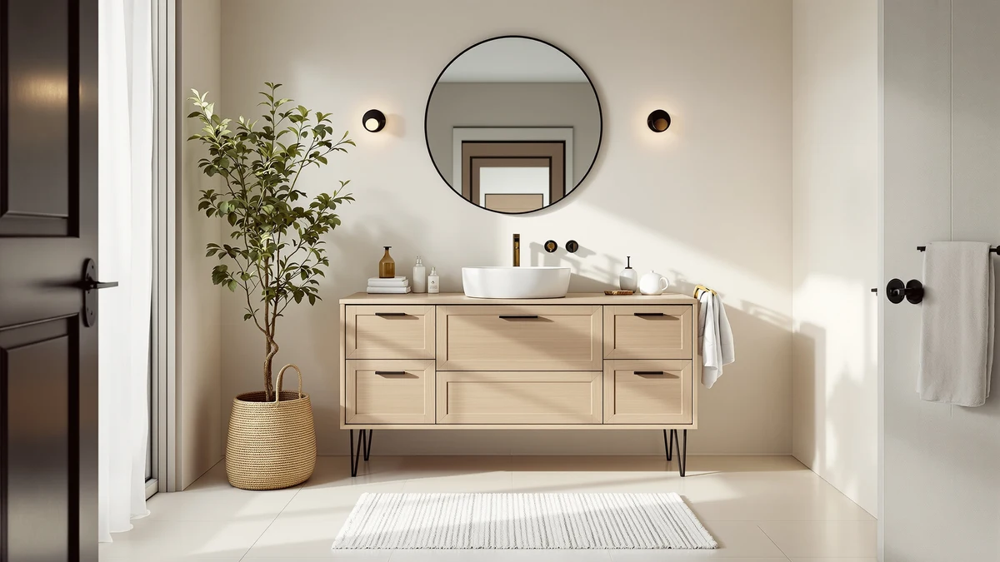

Best Bathroom Vanity Paint: Complete Guide (2026)
Prices and picks verified as of September 2026. Independent, reader-supported reviews.


Things to Know Before You Buy
- Standard wall paint and trim paint will not survive a bathroom vanity. Cabinet-grade acrylic or urethane enamel is the only category built for repeated water contact and toothpaste splatter.
- Skipping primer is the single biggest cause of peeling. A bonding primer designed for laminate, wood, or MDF gives the topcoat something to grip.
- Satin and semi-gloss sheens resist moisture better than eggshell or matte, because a higher sheen forms a tighter, less porous film.
- Full cure takes longer than dry-to-touch time. Most enamels need seven to thirty days of cure time before they can handle daily splashing without softening.
- Color choice affects resale value more than most homeowners expect. Neutral tones photograph better and appeal to a wider range of buyers than bold or trend-driven colors.
The best bathroom vanity paint is not the can sitting in your garage from the last time you painted a bedroom. Bathroom vanities face a harsher environment than almost any other painted surface in the house: standing water from hand washing, temperature swings from hot showers, and constant contact from towels, toothpaste, and cosmetics. A paint job that looks great on day one can start peeling at the edges within a few months if you pick the wrong product or skip a prep step.
You do not need a professional refinishing crew to get a durable result. A cabinet-grade enamel, the right primer for your vanity's surface, and a satin or semi-gloss sheen will carry you through years of daily use. The gap between a paint job that lasts and one that fails almost always comes down to preparation and product choice, not the brush you use or how many coats you apply.
This guide walks through the paint types that actually hold up in a bathroom, how to match primer to your vanity's material, the prep steps that prevent chipping, and the mistakes that shorten a finish's lifespan. We also cover a handful of vanity picks below if painting is not the route you end up taking.
What You Need to Know
Choosing bathroom vanity paint starts with understanding what the surface has to survive. Most vanity cabinets are built from MDF, plywood, or solid wood with a factory finish, and that finish is designed to resist scratches, not to accept a new coat of paint straight out of the can. Cabinet-grade acrylic enamel and waterborne alkyd (also sold as urethane enamel) are the two categories manufacturers actually recommend for wet-area cabinetry. Both cure to a harder film than interior wall paint, and both hold up to the wipe-downs a vanity gets several times a week.
Sheen matters as much as the paint category. A satin or semi-gloss finish sheds water and cleans with a damp cloth, while flat and eggshell sheens have more surface texture that traps moisture and grime. Reviewers who have repainted vanities consistently note that semi-gloss holds up better around the sink bowl and faucet base, where splashing is heaviest.
Color affects more than looks. Verified owner reviews of painted vanity kits show that lighter, neutral colors tend to hide water spots and toothpaste residue better than deep, saturated tones, which show every smudge under bathroom lighting. If you are painting to prepare a house for sale, a neutral palette also tends to appeal to more buyers than a bold statement color.
Finally, budget realistically for dry time. A vanity is one of the few painted surfaces you use daily within hours of finishing a coat, so rushing the schedule is the fastest way to undo careful prep work.
Types and Categories
Cabinet-grade acrylic enamel is the most common choice among the paints suited to a bathroom vanity. It cleans up with water, dries fast enough for a weekend project, and cures to a finish that resists scuffing better than standard latex wall paint. Brands market these under names like "cabinet and trim enamel" or "cabinet coating," and they usually come pre-tinted in a limited range or tintable at a paint counter.
Waterborne alkyd enamel is the step up in durability. It levels out brush marks better than acrylic, which matters on flat vanity doors where every stroke shows, and it forms a harder shell once fully cured. The tradeoff is a longer cure window and a stronger odor during application, so ventilation matters more with this category.
Chalk-style and mineral paints have become popular for a distressed or farmhouse look, but they need a dedicated topcoat, usually a water-based polyurethane, to hold up near a sink. Without that sealer, chalk paint absorbs water and stains within weeks.
Spray-applied lacquer, typically used by professional cabinet refinishers, gives the smoothest factory-style finish but requires spray equipment and a ventilated space, which puts it out of reach for most do-it-yourself projects. For a homeowner comparing options, cabinet enamel applied with a quality brush or mini roller covers the durability and appearance needs of nearly every bathroom vanity repaint.
How to Choose
Start with your vanity's material. Solid wood accepts primer and paint with the fewest surprises. Laminate and thermofoil surfaces need a bonding primer specifically labeled for slick, non-porous surfaces, since standard primer will peel off a laminate door within weeks. MDF, the material behind most budget vanities, soaks up the first coat of primer unevenly along cut edges, so those spots typically need a second pass before you paint.
Match sheen to how the vanity gets used. A powder room vanity that rarely touches water can get away with satin for a softer look. A primary bathroom vanity next to a shower, where humidity and splashing are constant, holds up longer with semi-gloss. Reviewers comparing painted vanities in high-humidity bathrooms consistently point to semi-gloss as the finish that resists water spotting best.
Buy enough paint and primer for two coats of each, plus extra for touch-ups. A quart typically covers a standard 30- to 36-inch vanity with one coat, so a two-coat job on a single-sink vanity usually needs a full quart of primer and a full quart of enamel.
Check the can's recoat and cure times before you commit to a weekend timeline. Some enamels are dry to the touch in an hour but need up to thirty days before they reach full hardness. If you have one bathroom in the house, plan around that cure window or you risk marring the finish before it sets.
Finally, factor in hardware. Removing knobs and pulls before painting, rather than taping around them, produces a cleaner edge and is the approach most painting guides recommend for cabinetry.
Common Mistakes to Avoid
Painting over a glossy factory finish without sanding is the top reason vanity paint fails early. That factory sheen blocks primer from bonding, and within a few months of daily use, the topcoat starts flaking at corners and edges. A quick scuff with 150 to 220 grit sandpaper, followed by a wipe with a tack cloth, solves this in under an hour.
Choosing wall paint or leftover trim paint instead of a cabinet-grade product is the second common error. Interior wall paint is formulated for low-touch vertical surfaces, not a surface that gets wiped, bumped, and splashed daily. It will chip and stain faster than a paint built for cabinetry.
Rushing the cure time causes damage that shows up weeks after the project looks finished. Setting a hairdryer down on a freshly painted top, or leaning a wet washcloth against a cabinet door, can leave a permanent mark if the paint has not fully cured, even if it felt dry to the touch days earlier.
Skipping primer on laminate or thermofoil vanities is another frequent misstep, since these surfaces are essentially plastic and reject standard paint without a bonding primer made for slick materials. And painting directly over grease or soap film, without a degreasing wipe-down first, leaves microscopic gaps that turn into peeling spots around the sink cutout.
Care and Maintenance
A painted bathroom vanity needs gentler cleaning than a factory-finished one, especially in the first month after the job. Wipe up standing water around the sink base right after you notice it instead of letting it sit, since pooled water is what breaks down even a well-cured enamel finish over time. A soft microfiber cloth with a mild soap and water solution handles daily grime without dulling the sheen.
Skip ammonia-based glass cleaners and abrasive scrub pads on painted surfaces. Owners who have refinished vanities report that harsh cleaners strip the sheen and leave a hazy patch that stands out against the surrounding finish. If a spot needs extra attention, a dab of the same mild soap solution and a soft cloth will lift most residue without damaging the topcoat.
Touch up chips and scratches as soon as they appear. Keeping a small amount of the original paint and primer on hand makes this a five-minute fix instead of a full repaint. Dab a matching amount over the bare spot, feather the edges with a small brush, and let it cure fully before wiping the area again.
With reasonable care, a properly painted and sealed vanity holds its finish for three to five years before it needs a refresh, which is comparable to the lifespan of many factory-finished budget vanities.
Our Top Picks
If a repaint is not worth the time investment, or your current vanity's damage goes beyond a fresh coat, these vanities give you a durable finish without the prep work. We compared each one on build material, finish durability, and price.

Editor’s Pick
Tribesigns 36" Bathroom Vanity with
A 36-inch single-sink vanity with a factory-sealed finish, sized to replace a mid-size bathroom cabinet without a repaint.
$356.02
Check Price on Amazon
Best Value
DELUXE LIVING 48" Bathroom Vanity
A larger 48-inch vanity built for a primary bathroom, with a durable finish sized to justify the higher price for daily double-sink use.
$999.99
Check Price on Amazon
Premium Choice
Tennant Brand 18 Inch Wall
A compact 18-inch wall-mount vanity that suits a small or half bathroom where floor space is tight and a full-size cabinet will not fit.
$295.00
Check Price on AmazonFrequently Asked Questions
What is the best bathroom vanity paint for a humid room?
A cabinet-grade acrylic or urethane enamel in a satin or semi-gloss sheen holds up best in a humid bathroom. These formulas cure to a harder, more water-resistant film than standard wall or trim paint, and the higher sheen sheds moisture instead of absorbing it.
Do you need to sand a vanity before painting it?
Yes. Sanding with 150 to 220 grit paper breaks the factory sheen so primer and paint can grip the surface. Skipping this step is one of the most common reasons vanity paint jobs peel or chip within months.
How long does painted vanity finish last before it needs touch-ups?
A properly primed and painted vanity with a durable enamel topcoat typically holds up for three to five years of daily use before edges and high-contact areas need a touch-up. Cabinets near a sink or shower see more splash exposure and may need attention sooner.
Can you paint a laminate or thermofoil bathroom vanity?
Yes, but only with a bonding primer made for slick, non-porous surfaces. Standard primer will not adhere to laminate or thermofoil and typically peels within weeks. Once the bonding primer is on, a cabinet-grade enamel applies and cures the same way it would on wood.
Is it cheaper to paint a vanity or replace it?
Painting is almost always cheaper for a vanity that is structurally sound but cosmetically dated, since a quart of primer and a quart of enamel typically cost less than a fraction of a new vanity. Replacement makes more financial sense when the cabinet box, drawers, or plumbing connections are damaged beyond a cosmetic fix.
Verdict
The best bathroom vanity paint is a cabinet-grade acrylic or urethane enamel in a satin or semi-gloss sheen, applied over a sanded surface and a bonding primer matched to your vanity's material. That combination handles the daily splashing, wiping, and humidity a factory wall-paint job was never built to survive. Prep work, not the paint brand, decides whether the finish lasts three years or three months, so sanding, priming, and respecting cure times matter more than any single product choice.
If painting is not the right project for your bathroom right now, whether the cabinet box needs replacing or you simply want a finish with a factory warranty, a vanity like the Tribesigns 36-inch model above gives you that durability without the weekend of prep and dry time. Either path gets you to the same result: a vanity finish that holds up to real bathroom use instead of chipping within the first year.